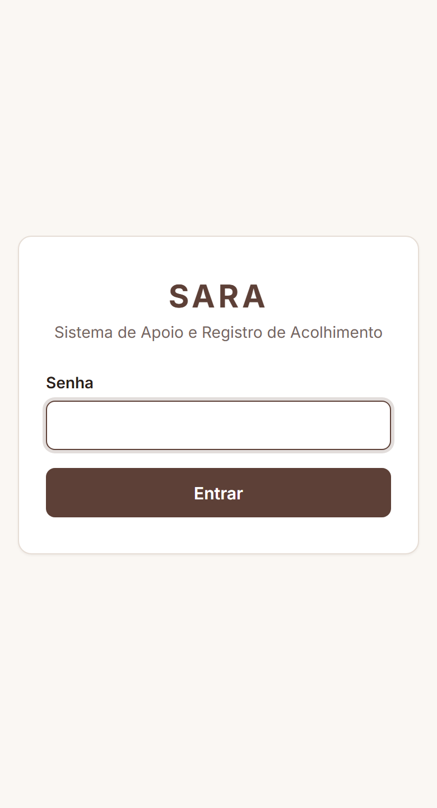
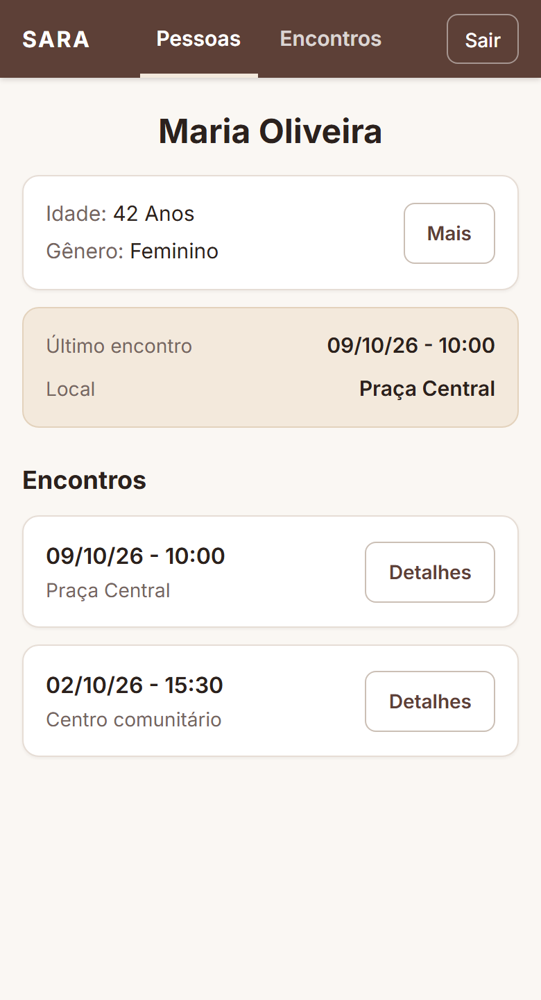
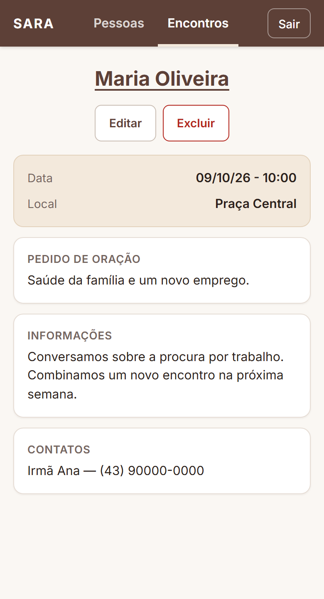
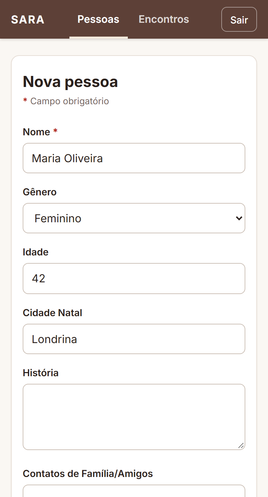

Pessoas
Cadastro com nome, gênero, idade, cidade de origem, história e contatos de familiares e amigos. O perfil mostra o último encontro em destaque e o histórico completo.
Projeto de extensão
Sistema de Apoio e Registro de Acolhimento
Um lugar só para registrar quem são as pessoas acolhidas e o que foi conversado em cada encontro com elas.
Quem acompanha pessoas em situação de vulnerabilidade costuma guardar as informações em cadernos, mensagens e na memória. Com o tempo, o histórico se perde: o que a pessoa contou, o que ela pediu, quando foi a última visita e com quem da família é possível falar.
O SARA reúne isso em um sistema simples, pensado para o celular. Cada pessoa tem um cadastro com sua história e seus contatos, e cada encontro fica registrado com data, local, pedido de oração e anotações. Assim, qualquer voluntário da equipe consegue retomar o acompanhamento de onde o último parou.
Cadastro com nome, gênero, idade, cidade de origem, história e contatos de familiares e amigos. O perfil mostra o último encontro em destaque e o histórico completo.
Registro de cada visita com data, local, pedido de oração, anotações e contatos. Os encontros aparecem do mais recente para o mais antigo e ficam ligados à pessoa.
O sistema guarda informações sensíveis, por isso só abre com a senha da equipe. Sem ela, nenhuma tela e nenhum dado ficam acessíveis.
Os dados exibidos nas imagens são fictícios.



